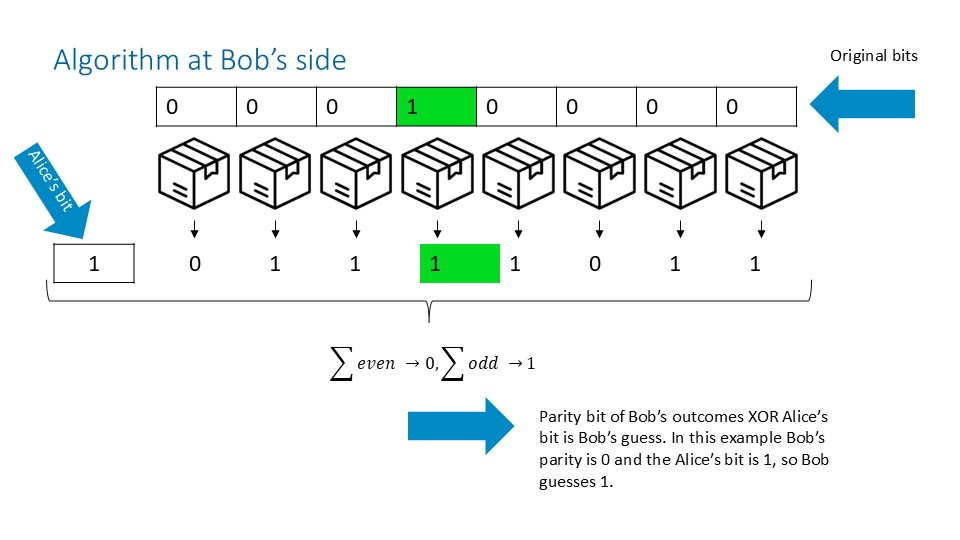

Linear Algorithm¶
Overview¶
The linear algorithm is a classical assisted strategy for random access codes (RACs) based on parity (XOR) encoding and decoding. The linear algorithm relies on a shared resource and defines the measurement stragegy for this shared resources, as well as the interpretation of the outcomes.
In QSeaBattle, the linear algorithm is implemented as a teacher strategy that generates supervised imitation targets for trainable models. The implementation is inspired by the linear inner-product–based constructions discussed by van Dam in his work on communication complexity and nonlocal correlations.
Conceptual Background (van Dam)¶
Van Dam shows that Boolean functions can be expressed as sums of products over \(\{0,1\}\), i.e. linear combinations modulo 2, and that distributed parties with access to shared resources can evaluate inner products efficiently by exchanging a single bit. In this view, linear RAC strategies encode information in parity bits, and decoding consists of XOR-ing communicated bits with locally computed parities.
In the language of van Dam, Alice and Bob share a distributed system \(\Phi_{AB}\) that produces correlated outcomes based on their local measurement choices. In QSeaBattle, this role is played by a shared-resource layer (PRAssistedLayer) that mediates correlations between Alice’s and Bob’s measurements.
The Linear Algorithm – Encoding & Decoding (as Implemented)¶
State and notation¶
- Let \(n^2 = \texttt{field\_size}^2\) be the number of field bits.
- Alice’s input field is \(x \in \{0,1\}^{n^2}\).
- Bob’s index state is represented by a one-hot gun vector \(g \in \{0,1\}^{n^2}\).
- Alice sends a communication vector \(c \in \{0,1\}^m\).
- Alice and Bob share a distributed resource \(\Phi_{AB}\) producing outcome vectors in \(\{0,1\}^{n^2}\).
- All additions are modulo 2 (XOR).
Alice side (Model A)¶

Measurement A (identity measurement)¶
Alice’s measurement is linear and trivial: each measurement outcome equals the corresponding field bit, $$ m_i^{(A)} = x_i. $$
Shared-resource interaction (first measurement)¶
The measurement vector \(m^{(A)}\) is passed to her part of the shared resource \(\Phi_{AB}\) as the current measurement. Since this is the first interaction with the shared resource, the previous measurement and outcome are set to zero, and a first_measurement flag is raised.
The shared resource produces an outcome vector $$ o^{(A)} \in {0,1}^{n^2}. $$
Combine A (communication generation)¶
Alice computes the parity of all shared-resource outcomes, $$ p^{(A)} = \bigoplus_{i=1}^{n^2} o^{(A)}_i. $$
This single parity bit is then replicated to form the communication vector: $$ c = (p^{(A)}, p^{(A)}, \dots, p^{(A)}) \in {0,1}^m. $$
Bob side (Model B)¶

Measurement B (identity measurement on the gun)¶
Bob’s measurement is also linear and identity-like: $$ m_i^{(B)} = g_i. $$
Shared-resource interaction (second measurement)¶
Bob feeds his measurement \(m^{(B)}\) into the his part of the same shared resource \(\Phi_{AB}\), together with Alice’s previous measurement and outcome. The first_measurement flag is now unset.
The shared resource produces a second outcome vector $$ o^{(B)} \in {0,1}^{n^2}. $$
Combine B (final decision)¶
Bob computes: - the parity of his shared-resource outcomes, $$ p^{(B)} = \bigoplus_{i=1}^{n2} o^{(B)}i, $$ - the parity of the received communication vector, $$ p^{(c)} = \bigoplus c_j. $$}^{m
The final output (shoot decision) is $$ \text{shoot} = p^{(B)} \oplus p^{(c)}. $$
Interpretation¶
Operationally, the algorithm realizes the following idea:
- Alice encodes global information about her input field into a single parity bit, mediated by shared-resource correlations.
- Bob combines this communicated parity with his own parity, derived from the shared resource and his index, to recover the desired bit.
Conditions and Limitations¶
- The algorithm is not claimed to be optimal for classical RACs.
- Correctness and performance depend on:
- uniform input distributions,
- noiseless classical communication,
- the behavior of the shared-resource layer.
- The shared resource affects only the parity values and does not alter the gun or field states.
- The strategy serves as a baseline teacher for imitation learning, not as a physical or information-theoretic bound.
QSeaBattle implementation notes¶
- The algorithm is implemented across:
LinTrainableAssistedModelA,LinTrainableAssistedModelB,- dataset generators in
lin_trainable_assisted_imitation_utilities.py. - Measurement layers implement identity mappings.
- Combine layers implement parity (XOR-reduction) logic.
- The shared-resource layer corresponds conceptually to van Dam’s distributed system \(\Phi_{AB}\).
Key References¶
- W. van Dam, Implausible Consequences of Superstrong Nonlocality, arXiv:quant-ph/0501159.
- W. van Dam, Nonlocality & Communication Complexity, D.Phil. thesis, University of Oxford, Chapter 9.